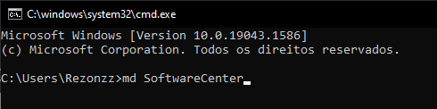
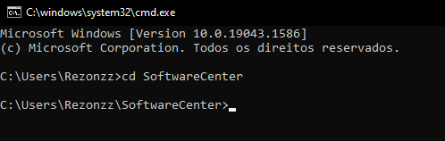
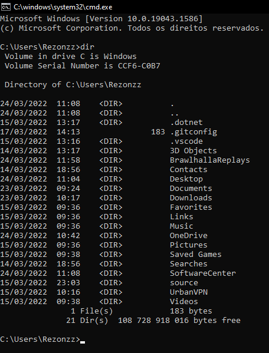
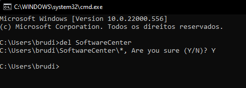
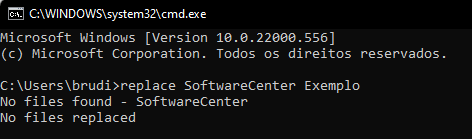
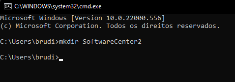
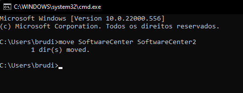
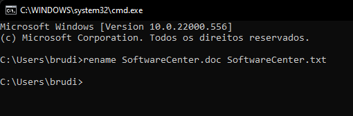
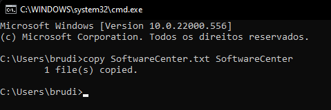

SoftwareCenter: Comandos do MS DOS
Lista dos comandos básicos do MS DOS
Lista dos Comandos
Cria um diretório ou subdiretório. As extensões de comando, que são habilitadas por padrão, permitem que você use um único comando md para criar diretórios intermediários em um caminho especificado.
Exemplo: MD SoftwareCenter
Exibe o nome do diretório atual ou altera o diretório atual. Se usado com apenas uma letra de unidade (por exemplo, cd C: ), cd C: exibe os nomes do diretório atual na unidade especificada. Se usado sem parâmetros, CD exibe a unidade e o diretório atuais.
Exemplo: CD SoftwareCenter
DIR é um comando que mostra todos os arquivos do diretório selecionado.
Exemplo: DIR
Exclui um ou mais arquivos. Este comando executa as mesmas ações que o comando erase .
Exemplo: del SoftwareCenter
Substitui os arquivos existentes em um diretório. Se usado com a opção /a , esse comando adiciona novos arquivos a um diretório em vez de substituir os arquivos existentes.
Exemplo: replace SoftwareCenter Exemplo (replace ficheiro 1 para o ficheiro 2).
Cria um diretório ou subdiretório. Extensões de comando, que são habilitadas por padrão, permitem que você use um único comando mkdir para criar diretórios intermediários em um caminho especificado.
Exemplo: mkdir SoftwareCenter2
Move um ou mais arquivos de um diretório para outro.
Exemplo: move SoftwareCenter SoftwareCenter2
(move ficheiro 1 para o ficheiro 2).
Renomeia arquivos ou diretórios.
Exemplo: rename SoftwareCenter.doc SoftwareCenter.txt
(rename ficheiro 1 para o ficheiro 2).
Copia um ou mais arquivos de um local para outro.
Exemplo: copy SoftwareCenter.txt SoftwareCenter
(copy ficheiro 1 para o ficheiro 2).
Altera as cores de primeiro plano e de plano de fundo na janela prompt de comando da sessão atual. Se usado sem parâmetros, a cor restaura as cores padrão da janela do Prompt de Comando e as cores da tela de fundo.
Exemplo: color a
Sai do interpretador de comando ou do script em lote atual.
Exemplo: exit
Espero que vos tenha ajudado com o vosso Trabalho ou ter vos despertado a curiosidade sobre a Linha de comandos.